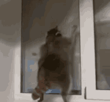

About Me
My name is Aashif, I am 21 years old born on the 26th of January 2002 and I am an international student from Sri Lanka at Algoqnuin College, I am currently enrolled in the IMD program. I have only been in Canada for about a month but I am very much in love with the environment and the poeple here. Prior to my enrollment in the college, I was interning as a graphic designer, who then later carried over to work as a full-time freelance artist/graphic designer. One of my main primary interests/passions is Art, which is why I decided to take on this program to help build my brand and surround myself with other people who inspire/encourage me to continue my work.
I would like to pursue a career in the field and hopefully land a high paying job as time allows and as mentioned prior continue to develop my brand and maybe even begin a startup business around my artwork. Growing up art has always been smething more than just a hobby, and to be able to carry this passion forward into my career drives me to work hard on this program, regardless of the difficulties it poses.
“If opportunity doesn’t knock, build a door.”
– Milton Berle
Hobbies
- Drawing
- Playing Video Games